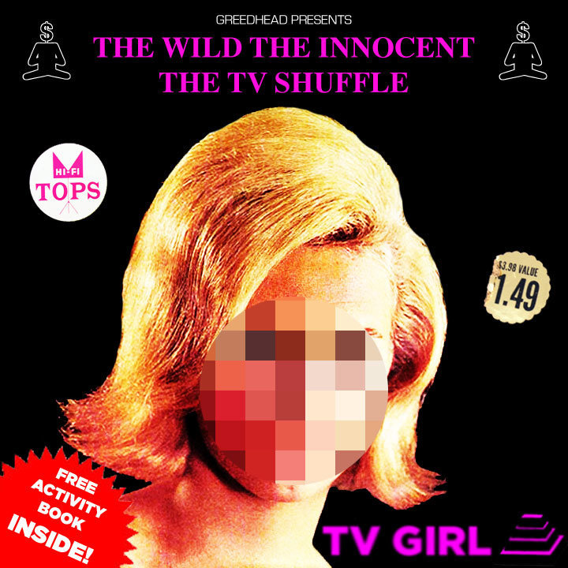
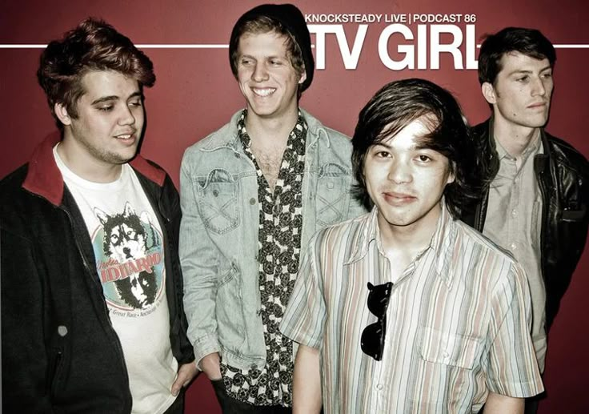
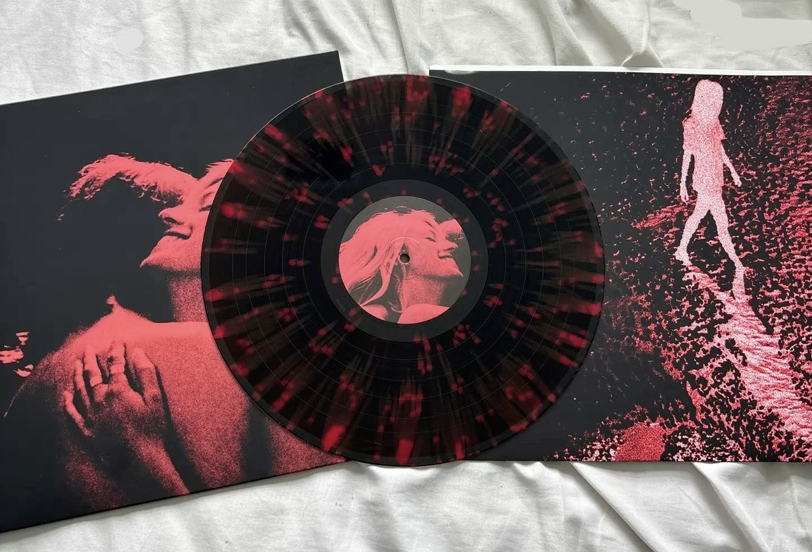
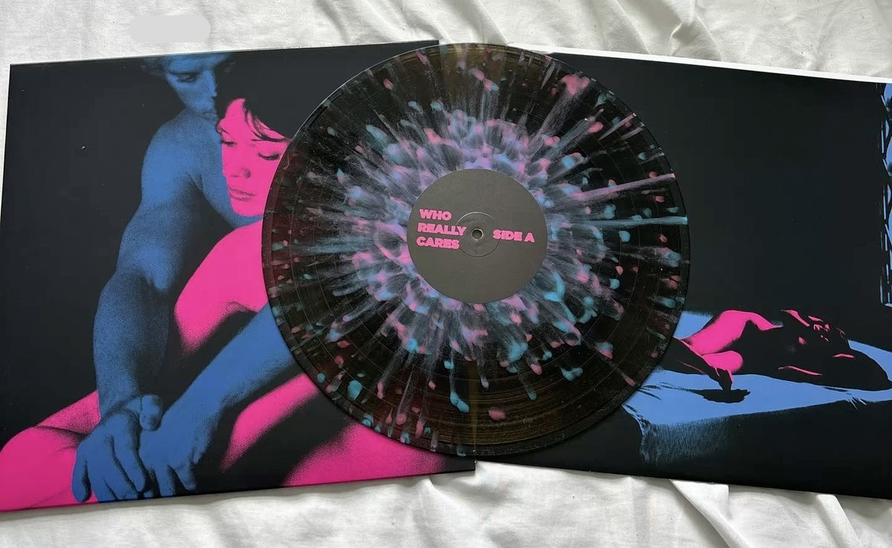

История
Начало: Сан-Диего, дуэт и первые релизы
TV Girl сформировались в 2010 году как проект друзей Трунга Нго и Брэда Питеринга. По собственным описаниям в ранних интервью, старт был скорее способом «попробовать идеи и повеселиться», без грандиозных планов. Даже название возникло из личных музыкальных ассоциаций: оно отсылает к песне группы Beat Happening. В том же 2010-м TV Girl выпустили дебютный EP, а затем продолжили линию небольших релизов и синглов.
Ранний период группы быстро показал, что их главная сила — умение перерабатывать культурный архив в новую поп-песню. Символический эпизод тех лет — трек If You Want It, в котором использовался семпл версии Hello It’s Me Тодда Рандгрена (1973). История стала заметной потому, что семплирование привело к официальному требованию удалить материал (takedown notice): интернет-эпоха, в которой «можно всё», внезапно напомнила о правилах индустрии. Для TV Girl это было и уроком, и своеобразной рекламой: проект, который работает с прошлым, оказался достаточно громким, чтобы прошлое ответило.

В 2011 году вышел следующий EP Benny and the Jetts, а к тому моменту к группе присоединился Джоэл Уильямс. Но куда важнее, что в 2012-м TV Girl оформили свою эстетику в формате, который им подходил идеально: микстейп. Они выпустили The Wild, The Innocent, The TV Shuffle (май 2012) и распространяли его бесплатно; релиз сопровождался дополнительными материалами вроде раскраски для скачивания. Такой ход был характерен для времени и сцены, где репутацию строили не рекламой, а вирусностью и «сарафанным радио».
- Эстетика микстейпа — это особый подход к созданию такой подборки, где акцент смещён с формального альбома на атмосферу, настроение и личное высказывание автора. Это не просто случайный набор песен, а продуманная композиция, где важны:
- Отбор треков.
- Автор сознательно подбирает композиции, которые могут быть связаны жанрово, настроением, тематикой или отражать его личные вкусы.
- Порядок следования.
- Последовательность треков создаёт определённое развитие: от тихой и расслабляющей песни к более энергичной или, наоборот, от динамичной к спокойной.
- Сведение и эффекты. В диджейских микстейпах треки часто подгоняют по ритму, чтобы они звучали без пауз, а диджей использует различные эффекты для поддержания атмосферы.
- Концептуальность. Иногда микстейп строится как целостное высказывание — например, посвящён конкретному человеку, событию или представляет собой исследование определённой темы.
Перелом состава и превращение в группу
2013 год стал точкой поворота. Трунг Нго покинул проект, и Питеринг на время оказался фактически единственным постоянным участником. Это изменило баланс: если раньше TV Girl воспринимались как дуэт, то теперь центр тяжести окончательно сместился к авторскому миру Питеринга — его голосу, его монтажной логике семплов и его манере рассказывать истории от лица наблюдателя, который слишком много понимает, чтобы быть наивным. Вскоре к TV Girl присоединились Джейсон Уайман и Уайатт Хармон, и проект снова стал полноценной группой. Эта конфигурация укрепила «студийность» звучания: ударные и клавишные помогли увести музыку от чисто коллажного подхода к более цельным аранжировкам, где семплы работают не как украшение, а как строительный материал.

Создание основных альбомов
French Exit Who Really Cares Death of a Party GirlFrench Exit: альбом, который стал визитной карточкой

Дебютный полноформатный альбом French Exit вышел 5 июня 2014 года и во многом закрепил тот образ TV Girl, который слушатели узнают до сих пор. Сами музыканты описывали пластинку как набор песен о потерянном влечении, избытке любви и её нехватке одновременно — формулировка, в которой уже слышна фирменная двойственность: признание и издёвка в одном предложении. На уровне звука French Exit — это мелодичный инди-поп с винтажным шлейфом, где хрупкие гармонии сочетаются с семплами и разговорными вставками, создающими ощущение будто слушаешь «саундтрек к чьим-то воспоминаниям».
Одной из ключевых песен, ассоциируемых с эпохой French Exit, стала Lover’s rock. На уровне техники она показательна: TV Girl не просто «берут старое», а превращают найденный фрагмент в мотор композиции — луп становится гипнозом, а поверх выстраивается новый сюжет. Такой подход связан с любовью Питеринга к поиску редкой музыки и медиафрагментов: он не раз подчеркивал, что «охота» за звуками — часть процесса.
Интересно, что массовая узнаваемость French Exit пришла не сразу. Альбом годами оставался «культовым» — любимым у тех, кто охотится за эстетикой на стыке романтики и цинизма. Но затем социальные сети резко изменили траекторию: начиная с 2022 года TV Girl начали активно расходиться в TikTok, и уже в 2023-м сразу несколько песен группы стали попадать в чарты в разных странах, хотя были выпущены заметно раньше. В этом феномене есть ирония, идеально подходящая TV Girl: музыка о прошлом сама стала «вирусным прошлым», которое догнало настоящее.
Who Really Cares: мрачнее, прямее, ещё ближе к «культовости»

Второй студийный альбом Who Really Cares вышел 26 февраля 2016 года. Группа описывала его как пластинку о сексе или его отсутствии и последствиях — или, если точнее, об отсутствии последствий. В этой формулировке слышен привычный для TV Girl взгляд на отношения: не трагедия и не комедия, а странная смесь обоих жанров, где люди делают ошибки и потом пытаются убедить себя, что «ничего страшного».
Именно с Who Really Cares связаны треки, которые позднее особенно мощно «выстрелили» в эпоху TikTok и стриминга: Cigarettes out the window, Taking what’s not yours и Not allowed. Эти песни часто воспринимают как отдельные «сингловые» явления, но внутри альбома они работают как главы одной книги: везде есть тема желания, которое превращается в привычку, и привычки, которая маскируется под чувство.
Важная деталь для понимания их подхода — прозрачность источников. На Bandcamp группа указывала семплы и благодарности; например, для некоторых треков упоминались разрешения на использование сэмплов. Это не отменяет коллажной природы музыки, но показывает: TV Girl не просто играют в «воровство эстетики», а фиксируют свою работу как ремесло, где важно, из чего именно собрана песня.
Death of a Party Girl: образ, который спорит со слушателем

Третий студийный альбом Death of a Party Girl вышел 8 мая 2018 года. Уже само название звучит как тизер к фильму, которого не существует: будто перед нами история о конце беспечного периода, но рассказана она не морализаторски, а с привычной для TV Girl ухмылкой. По данным Bandcamp, продакшн песен делал Питеринг, а сведение и мастеринг — Уайман, что подчёркивает «внутреннюю» автономность группы.
Этот период часто описывают как более «контрастный»: в песнях остаётся поп-притягательность, но настроение становится менее мечтательным и более резким. TV Girl умеют писать мелодии, которые прилипают к памяти, и параллельно оставлять ощущение, что тебе только что рассказали неприятную правду — но таким тоном, что ты смеёшься, хотя вообще-то не смешно.